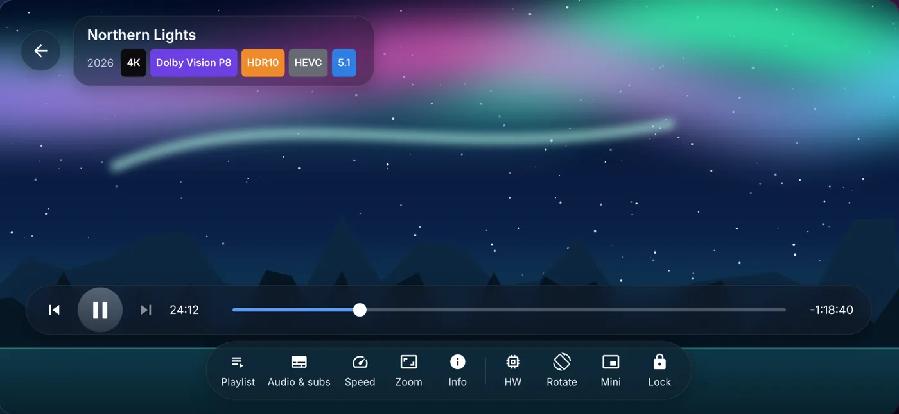

Play 4K HDR and Dolby Vision movies. Fast and simple. For Mac (Apple Silicon) and Android.

Built for big files, best picture and real cinema sound.
HDR10, HDR10+, HLG and Dolby Vision, with hardware or software decoding.
Big MKV files open in about a second, with every audio and subtitle track.
Dolby Digital, DD+, TrueHD, DTS and DTS-HD, plus an equaliser.
Posters, Continue watching and format badges for every movie.
Chapter marks and a picture preview while you seek.
Chapters and a sleep timer, too.
Blu-ray original styles and Smart SDH.
Made on your device with Whisper. Nothing is uploaded.
For both audio and subtitles.
Play from SMB shares and Jellyfin, and Cast to TV.
Themes, a transparency slider and editable control buttons.
Google sign-in syncs across devices. Free with ads, Premium removes them.
Works on your Mac, phone, tablet and TV.
macOS 15 or newer, Apple Silicon (M1 and later).
Android 8.0 or newer — phone, tablet or Android TV.
Just a few easy steps.
xattr -dr com.apple.quarantine /Applications/RokaPlayer.app